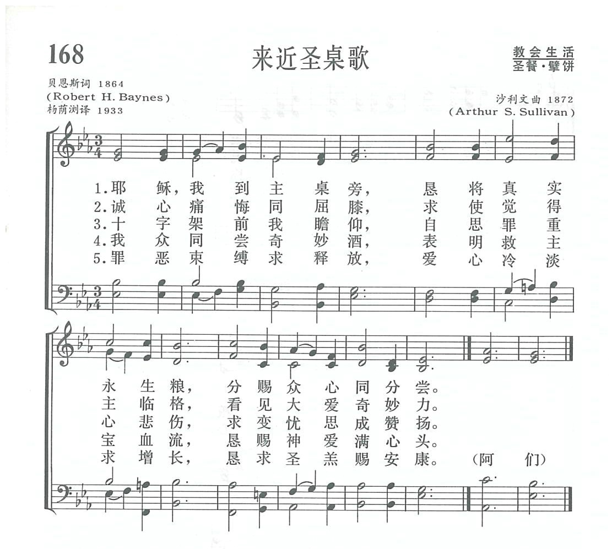
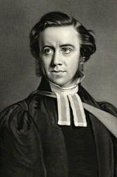
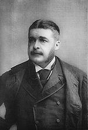

|
|
|
|
1 Jesus, to Thy table led, 2 While in penitence we kneel, 3 While on Thy dear cross we gaze, 4 When we taste the mystic wine, 5 From the bonds of sin release, Amen. |
1. 耶穌，我到主桌旁，懇將真實永生糧，分賜眾心同分嘗。 |
|
https://www.zanmeishige.com/tab/13841.html?songbook=1&index=168

|
|
|
|
|


168来近圣桌歌 https://youtu.be/zXQo2T8Y6L8 -
https://www.youtube.com/watch?v=pGzYPpsuSfs
| Text: | Jesus, to Thy table led |
| Author: | Robert H. Baynes |
| Tune: | LACHRYMAE |
| Composer: | Arthur S. Sullivan |
| Short Name: | Robert Hall Baynes |
| Full Name: | Baynes, Robert Hall, 1831-1895 |
| Birth Year: | 1831 |
| Death Year: | 1895 |
Baynes, Robert Hall, M.A., s. of the Rev. Joseph Baynes,

b. at Wellington, Somerset, Mar. 10, 1831, and educated at St. Edmund Hall, Oxford, graduating B.A. 1856, and M.A. 1859. Ordained in 1855, he held successively the Curacy of Christ Church, Blackfriars, the P. Curacy of St. Paul's, Whitechapel; of Holy Trinity, Maidstone, and of St. Michael's, Coventry. In 1870 he was Bp. designate of Madagascar; but resigned in 1871. In 1873 he was appointed Hon. Canon of Worcester Cathedral, and in 1880 Vicar of Holy Trinity, Folkestone. Canon Baynes is more widely known as the compiler of some most successful books of sacred poetry than as an original hymn-writer, although some of his hymns are of considerable merit, and are in extensive use. Of these the best known are “Jesu, to Thy table led," and "Holy Spirit, Lord of glory." He was editor of Lyra Anglicana, 1862; English Lyrics, 1865; The Canterbury Hymnal, 1864 ; and the Supp. Hymnal, 1869 (all pub. Lond., Houlston & Wright); The Illustrated Book of Sacred Poems, Lond., Cassell & Co., and is the author of original Autumn Memories and other Verses, Lond., Houlston & Wright, 1869. His hymns appeared in The Canterbury Hymnal, the Autumn Memories, and in the Churchman’s Shilling Magazine, of which he was sometime editor. His Home Songs for Quiet Hours were pub. in 1878, and Hymns for Home Mission Services in the Church of England, 1879. To his eucharistic manual, At the Communion Time, a series of hymns for Holy Communion are added. D. March 12, 1895.
-John Julian, Dictionary of Hymnology (1907)
Notes
Jesu, to Thy table led. R. H. Baynes. [Holy Communion.] Published in his Canterbury Hymnal, 1864, No. 227, in 7 stanzas of 3 lines, and headed with the text, "To know the love of Christ, which passeth knowledge." It has passed into numerous hymnals, both in Great Britain and America. It is the most widely used of Canon Baynes's hymns.
--John Julian, Dictionary of Hymnology (1907)
Tune Information
| Title: | LACRYMAE |
| Composer: | Arthur Sullivan (1872) |
| Meter: | 7.7.7 |
| Incipit: | 33345 12355 17665 |
| Key: | E♭ Major |
| Copyright: | Public Domain |
| Short Name: | Arthur Sullivan |
| Full Name: | Sullivan, Arthur, 1842-1900 |
| Birth Year: | 1842 |
| Death Year: | 1900 |
Arthur Seymour Sullivan (b Lambeth, London. England. 1842; d. Westminster, London, 1900)

was born of an Italian mother and an Irish father who was an army bandmaster and a professor of music. Sullivan entered the Chapel Royal as a chorister in 1854. He was elected as the first Mendelssohn scholar in 1856, when he began his studies at the Royal Academy of Music in London. He also studied at the Leipzig Conservatory (1858-1861) and in 1866 was appointed professor of composition at the Royal Academy of Music. Early in his career Sullivan composed oratorios and music for some Shakespeare plays. However, he is best known for writing the music for lyrics by William S. Gilbert, which produced popular operettas such as H.M.S. Pinafore (1878), The Pirates of Penzance (1879), The Mikado (1884), and Yeomen of the Guard (1888). These operettas satirized the court and everyday life in Victorian times. Although he composed some anthems, in the area of church music Sullivan is best remembered for his hymn tunes, written between 1867 and 1874 and published in The Hymnary (1872) and Church Hymns (1874), both of which he edited. He contributed hymns to A Hymnal Chiefly from The Book of Praise (1867) and to the Presbyterian collection Psalms and Hymns for Divine Worship (1867). A complete collection of his hymns and arrangements was published posthumously as Hymn Tunes by Arthur Sullivan (1902). Sullivan steadfastly refused to grant permission to those who wished to make hymn tunes from the popular melodies in his operettas.
Bert Polman
第168首 来近圣桌歌 Jesus，to Thy table led _R．H.Baynes
经文：“这是我的身体，为你们舍的，你们也应当如此行，为的是记念我”(路22：19)。
《来近圣桌歌》是英国圣公会牧师贝恩斯所写，最初发表于他所主编的《坎特伯雷赞美诗集》。贝恩斯(R．H.Baynes，1831—1895)乃英国一位圣公会牧师之子，牛津大学毕业后，于1855年受圣职，历任伦敦、梅德斯通、考文垂教区牧职，曾任伍斯特座堂荣誉法政牧师(见第87首注①)，最后任福克斯通地方圣三一堂区牧。他曾编辑若干卷宗教诗集和赞美诗。
这首诗每节三行，每行七字(或称七个音节，7．7．7)是比较少见的诗体，给编谱配曲的人有一定的困难。
沙利文(A.S.Sullivan，1842-1900)所谱的《LACRYMAE》相当成功。沙利文乃英国著名音乐家，在学生时代便显露出他的音乐才华，老师们都认为他天生是英国最伟大的作曲家。他13岁时就出版了处女作，以后历任许多著名礼拜堂的琴师，皇家歌咏团指挥，国立音乐学院院长，作曲学教授。他写过许多赞美诗曲调、神曲、教堂音乐和喜剧，曾为莎士比亚剧本作曲。据说他在喜剧方面所得的钱比任何音乐家在音乐上所得的钱都多。1883年他被英皇册封为男爵，得过不少勋章。
《新编》内除这首((LACRYMAE))，还有第322首《信徒精兵歌》的曲调，调名《格特鲁德(ST.GERTRUDE)》，都是他所谱，也是信徒十分熟悉的曲调。